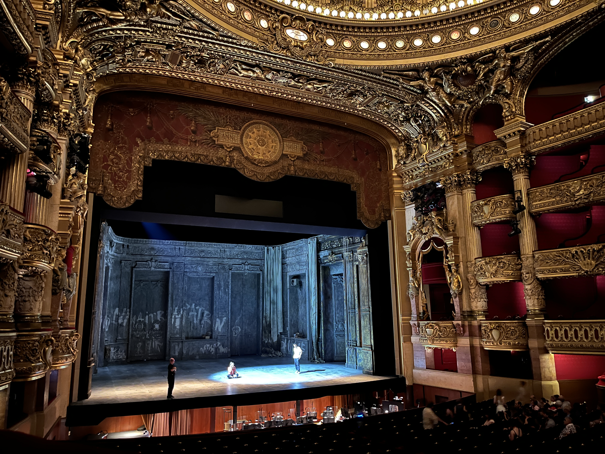
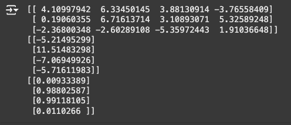

IML 346 Rapid Critical Media Project #1
By Allison Yen
This summer, I went to France. This is Palais Garnier, aka the Paris Opera House.
It was a breathtaking world. I could imagine entire lives taking place within the walls of this building. Not just on the stage. Everywhere.
Scientific research. They way in which we "uncover" the truth of the world. Numbers. Measurements. Objectivity. "Empiricism." That's what we're taught, anyway.
But we don't see the world as numbers. We see it as stories.
And story is art.
So...what exactly is arts-based research? I'm gonna be completely honest, I couldn't tell you (yet). But the logic of using human experience (art) in the process of understanding the world (research)? It does make sense.